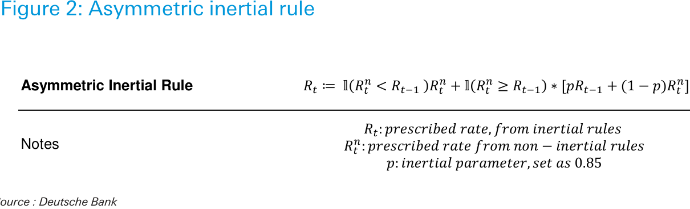

Distributed on: 07/08/2023 16:52:06 GMT
Deutsche Bank Research
Economics
Date
North America United States
US Economic Perspectives
Getting real about rate cuts: Four scenarios for '24 rate reductions
Matthew Luzzetti, Ph.D.
Chief US Economist
+1-212-250-6161
Amy Yang
Economist
n
In his press conference following the July FOMC meeting, Chair Powell was quizzed about the conditions under which the Fed would cut rates. While he was, expectedly, non-committal on the quantitative thresholds to trigger these decisions, he continued to view preventing real rates from rising sharply as inflation falls as a key consideration for rate cuts.
+1-212-454-9893
Brett Ryan
Senior US Economist
+1-212-250-6294
Justin Weidner
Economist
n
We consider what policy rules would imply for the timing and pace of rate cuts in 2024 under different economic scenarios. The four scenarios we consider are: (1) DB's house view for a mild recession starting in Q4 2023; (2) The Fed's median forecast from the June SEP; (3) An immaculate disinflation where inflation drops precipitously without strain in the labor market; and (4) A no landing scenario where inflation remains high and the labor market tight.
+1-212-469-1679
n
Our policy rule analysis finds a pretty consistent message: Absent a no landing-type scenario, the Fed is likely to begin to cut rates in the first half of 2024 and that significant rate reductions could follow over the remainder of the year. Under the no landing scenario, the Fed could well hold rates from policy rules should be relied upon in the current economic environment.
Deutsche Bank Securities Inc. IMPORTANT RESEARCH DISCLOSURES AND ANALYST CERTIFICATIONS LOCATED IN APPENDIX 1. MCI (P) 097/10/2022. UNTIL 19th MARCH 2021 INCOMPLETE DISCLOSURE INFORMATION MAY HAVE BEEN DISPLAYED, PLEASE SEE APPENDIX 1 FOR FURTHER DETAILS.
7T2se3r0Ot6kwoPa
====================================================================================================
Introduction
In his press conference following the July FOMC meeting, Chair Powell was quizzed emphasized that he and his colleagues do not anticipate conditions will be appropriate to cut rates this year, but as the June SEP continued to show, officials expect to reduce rates in 2024. While he was, expectedly, non-committal on the quantitative thresholds to trigger these decisions, he continued to view preventing real rates from rising sharply as inflation falls as a key consideration for rate cuts.
With increasing focus on the other side of the Fed’s policy cycle as they approach the likely terminal rate, we consider what policy rules would imply for the timing and pace of rate cuts under different economic scenarios. Our work builds on an approach in a report from last year ( Mapping the final frontier of the Fed's cycle: Will they cut in '23? ) by also tracing out the frontier between unemployment rates and core PCE inflation that would indicate rate cuts should occur.
Policy rules
Summarizing our previous work, we consider several traditional policy rules often used to assess the appropriate stance of monetary policy (for a more detailed discussion see: Rate cuts in early 2023? Policy rules say not so fast ). In particular, we include the traditional Taylor rule as well as the balanced approach rule popularized by former Chair Yellen, which doubles the weight on the unemployment gap. Given that our previous work showed little impact from versions of these rules that incorporate the Fed’s new policy framework, for example by aiming for a moderate inflation overshoot or treating the unemployment gap asymmetrically, we drop the consideration of them in this piece for simplicity. As is common, we also use inertial versions of these rules with a smoothing parameter of 0.85 weight on the lagged policy rate. We assume 0.75% for long-run r-star, a midpoint between our estimate of 1% and the median from the SEP of 0.5%, and 4% for NAIRU, which is consistent with the Fed's current long-run projection. The exact specifications of these rules are detailed in Figure 1. Although Fed policy has clearly deviated from these rules over the past few years, they provide a standard lens through which to assess how policy could respond to different economic scenarios.
Non-inertial Rules
Taylor Rule
Balanced Approach
Notes
Source : Deutsche Bank
However, to capture the fact that Fed policy inertia is typically only relevant in one direction – when the Fed is raising rates – we apply this inertia parameter only when the non-inertial version of the policy rule prescribes a fed funds rate that is above the lagged fed funds rate, i.e., when the rule prescribes rate hikes. Conversely, when the non-inertial version of the rule calls for rate cuts, we follow that prescription directly without inertia. This asymmetric inertial rule is defined in Figure 2.
Page 2 Deutsche Bank Securities Inc.
Figure 1: Policy rules
====================================================================================================
Source : Deutsche Bank
Four econ scenarios
For our analysis, we consider four economic scenarios that span a broad range of the most likely economic outcomes through the end of 2024. These include:
1. DB baseline forecast : mild recession starting in Q4 2023;
2. Fed median from June SEP : unemployment rate rising to 4.5% as inflation gradually converges back to target over time;
3. Immaculate disinflation : inflation follows our baseline forecast but with the labor market softening only modestly as unemployment rises to about 4%;
4. No landing : growth and the labor market remain resilient with the unemployment rate staying below 4% and inflation comes in stronger than anticipated, leveling out at 3.25% in 2024.
The unemployment rate and core PCE forecasts from these scenarios – the two sides of the Fed’s dual mandate – are depicted in figures 3 and 4 below. In terms of expectations, our baseline forecast, with lower inflation and a higher unemployment rate driven by recession, should have earlier and steeper rate cuts, while the no landing scenario should be the most hawkish from a monetary policy perspective. The two scenarios in the middle – Fed median forecasts and immaculate disinflation – have a more difficult trade-off between the Fed's dual mandate objectives.
To arrive at a quarterly frequency for the Fed forecasts, we linearly interpolate between their Q4 forecasts.
Deutsche Bank Securities Inc. Page 3
Figure 2: Asymmetric inertial rule
====================================================================================================
Figure 3: Core PCE inflation scenarios
DB
2023 June SEP
Immaculate disinflation
No landing
Dec-22 Jun-23 Dec-23 Jun-24 Dec-24
Source : BLS, Haver Analytics, Deutsche Bank
Note: By assumption, inflation is the same in "immaculate disinflation" scenario as in DB scenario. Source : BEA, Haver Analytics, Deutsche Bank
What do the policy rules say?
We consider what the policy rules would imply for the timing and pace of rate cuts in 2024 under each of these scenarios. As expected, the most severe cuts come from the DB recession scenario while the no landing scenario shows further gradual rate increases occurring through mid-2024. The extent of rate cuts under the middle two scenarios depends on the policy rule chosen, with the balanced approach rule showing sharper rate cuts for the Fed June SEP given the higher weight applied to the rise in unemployment under that forecast.
Source : Deutsche Bank
Source : Deutsche Bank
Figure 6 provides a summary of the timing and magnitude of rate cuts implied by these policy rules across the four scenarios. The policy rules show rate cuts occurring by Q1 2024 across three of the scenarios: DB, June SEP, and immaculate disinflation. The cuts under these scenarios occur for somewhat different reasons. For the DB scenario, cuts are driven by softer inflation and a weaker labor market, and the same is true for the June SEP, though to a more limited degree. However, the cuts under the immaculate disinflation scenario are nearly entirely driven by declining inflation as the unemployment rate only rises to 4% under that scenario.
Page 4 Deutsche Bank Securities Inc.
Figure 4: Unemployment rate scenarios
Figure 5: Policy rate implied by non-inertial Taylor rule
Figure 6: Policy rate implied by non-inertial balanced
====================================================================================================
Timing of First Rate cut Total bps of cuts in 2024
DB 2024Q1 2023Q4 June SEP 2024Q1 2024Q1
Timing of First Rate cut Total bps of cuts in 2024
Immaculate Disinflation 2024Q1 2024Q1 No Landing 2025Q1 2025Q2 -1
====================================================================================================
Figure 9: Rate cut frontier based on asymmetric inertial rule
====================================================================================================